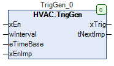

TrigGen (FB)¶
FUNCTION_BLOCK TrigGen
Kurzbeschreibung¶
Impulserzeugung mit einstellbarem Zeitintervall
Darstellung¶

Schnittstellen¶
Eingänge¶
Name Datentyp Wertebereich Initialwert Funktion xEn BOOL Freigabeeingang wInterval WORD Zeitwert für Zeitintervall eTimeBase eTimeMS Zeitbasis für Zeitintervall xEnImp BOOL Option Freigabe 1. Impuls
Ausgänge¶
Name Datentyp Wertebereich Initialwert Funktion xTrig BOOL Impulsausgang tNextImp TIME Restzeit bis zum nächsten Impuls
Funktionsbeschreibung¶
Allgemeines¶
Am Impulsausgang xTrig werden zyklisch Impulse mit einer Zeitdauer von einem Programmzyklus und einem Zeitintervall von ( wInterval multipliziert
mit eTimeBase ) erzeugt, falls der Freigabeeingang xEn aktiv ist.
Beschränkung des maximalen Zeitintervalls
Das Zeitintervall ist dabei auf maximal 48 Tage beschränkt, um einen internen Werteüberlauf zu vermeiden.
Beispiel zur Berechnung des Zeitintervalls
wIntervall = 1000, eTimeBase = Millisecond, es werden Impulse in einem Zeitintervall von 1000ms erzeugt.
Freigabe 1.Impuls xEnImp¶
Bei aktiver Option ( xEnImp = TRUE ) wird der 1. Impuls direkt nach der Freigabe xEn erzeugt.
Bei nicht aktiver Option ( xEnImp = FALSE ) wird der 1. Impuls nach der Freigabe xEn nach Ablauf eines Zeitintervalls erzeugt.